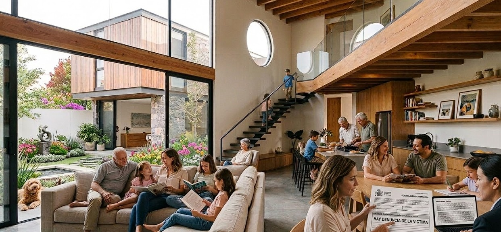

Hemos denunciado robos de diversos objetos como una moto, una billetera, cuatro celulares, tres llaves de auto o un bolso. Parece que los jueces terminan defendiendo a los delincuentes. Por esta situación, muchas personas creen que presentar una denuncia formal no sirve de mucho, porque no realizan allanamientos ni recuperan las pertenencias robadas. Todo queda en la impunidad. Los jueces no protegen a las víctimas, protegen a los delincuentes.
En mi barrio han ocurrido varios hechos. A mi papá, Ariel, en el año 2012 le robaron la billetera y una llave del auto. En el año 2015 le robaron tres celulares: lo amenazaron con un cuchillo para que entregara sus pertenencias. En el año 2021 también lo amenazaron con una pistola, pero un comisario de policía logró intervenir y lo ayudó. El delincuente terminó escapando con un celular y la llave del auto.
A mis tíos Cristian, Fabio y Pablo también les robaron una moto. Además, a mi abuelo Hugo y a mi abuela Elsa les robaron aproximadamente 500 mil pesos y varias pertenencias que tenían para la reparación de la casa. Esto ocurrió en el año 2023. También a mis tíos Cristian, Fabio y Pablo los estafaron mediante un delito digital. Ellos hicieron la denuncia por fraude, pero no se hizo nada y no pudieron recuperar el dinero.
Mi abuelo Roberto también fue víctima de una estafa de aproximadamente 250 mil pesos. El hecho fue denunciado ante la policía, pero no recuperó el dinero, que quedó en manos de las autoridades, como políticos, jueces y la policía de cibercrimen, durante el allanamiento al delincuente.
Además, tres de mis primas fueron víctimas de grooming. Ellas denunciaron a los responsables, pero los jueces y las juezas no hicieron nada. Los acusados no están en la cárcel y continúan en libertad, pudiendo seguir perjudicando a otras víctimas.
Cuando se realizan allanamientos, el dinero de los delincuentes no vuelve a las víctimas. Ese dinero queda en manos de las autoridades, como políticos, jueces, la policía de cibercrimen y el gobierno No puede recuperar su ganancia porque fue víctima de fraude . Por esta razón, las víctimas casi nunca recuperan lo que les robaron. Por eso decimos que no se hace nada, a pesar de las múltiples denuncias realizadas por nuestra familia.
Además, esto fue denunciado ante la comisaría. En el año 2015 le robaron un celular; le sacaron la mano en la calle y no logró recuperarlo. En el año 2025 le robaron otro celular en la escuela donde trabaja, y aunque lo denunció, no recuperó sus pertenencias ni sus cosas personales. A todo esto, la policía no mostró compromiso con la víctima, ya que a menudo le dicen que vaya a la casa del ladrón o que compre el celular robado, o simplemente minimizan lo ocurrido. Esto evidencia que algunos policías son corruptos, al igual que jueces y juezas, pues hoy en día las denuncias formales de las víctimas suelen quedar sin resultado. La víctima no puede ir a la casa de los delincuentes, especialmente si estos tienen problemas mentales y podrían causar daño físico con un cuchillo o pistola.